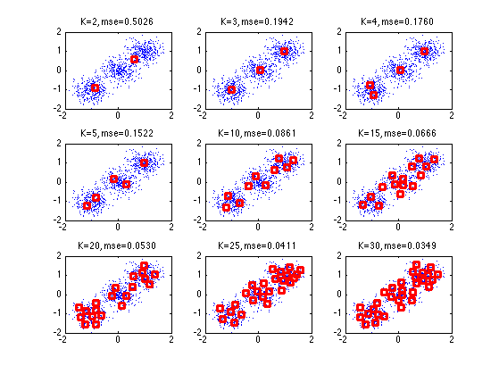
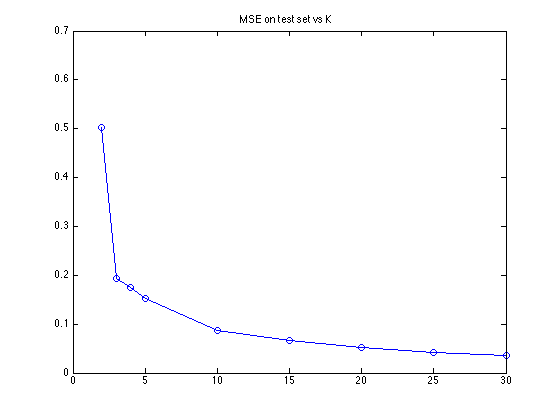
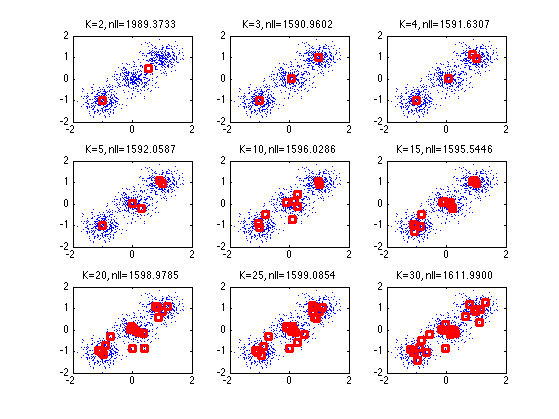
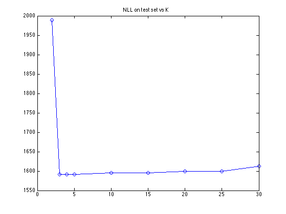

Kmeans Model Selection in 2D
setSeed(0);
d = 2; ncentres = 3;
mix = gmm(d, ncentres, 'spherical');
mix.centres = [1 1; -1 -1; 0 0];
mix.covars = [0.1 0.1 0.1];
n = 1000; ndx = 1:n;
Xtrain = gmmsamp(mix, n);
n = 1000;
Xtest = gmmsamp(mix, n);
figure;
Ks = [2 3 4 5 10 15 20 25 30];
for i=1:length(Ks)
K = Ks(i);
mu = kmeansFit(Xtrain, K)';
Xhat = kmeansDecode(kmeansEncode(Xtest, mu'), mu');
mse(i) = mean(sum((Xhat - Xtest).^2,2));
subplot(3,3,i)
plot(Xtrain(:,1), Xtrain(:,2), '.');
hold on
for k=1:K
plot(mu(k,1), mu(k,2), 'rs', 'linewidth', 3);
end
title(sprintf('K=%d, mse=%5.4f', K, mse(i)))
end
figure
plot(Ks, mse, 'o-')
title('MSE on test set vs K')
figure;
options = foptions;
for i=1:length(Ks)
K = Ks(i);
mix = gmm(d, K, 'spherical');
mix = gmmem(mix, Xtrain, options);
nll(i) = -sum(log(gmmprob(mix, Xtest)));
subplot(3,3,i)
plot(Xtrain(:,1), Xtrain(:,2), '.');
hold on
mu = mix.centres;
for k=1:K
plot(mu(k,1), mu(k,2), 'rs', 'linewidth', 3);
end
title(sprintf('K=%d, nll=%5.4f', K, nll(i)))
end
figure; plot(Ks, nll, 'o-')
title('NLL on test set vs K')
Maximum number of iterations has been exceeded
Maximum number of iterations has been exceeded
Maximum number of iterations has been exceeded
Maximum number of iterations has been exceeded
Maximum number of iterations has been exceeded
Maximum number of iterations has been exceeded
Maximum number of iterations has been exceeded
   